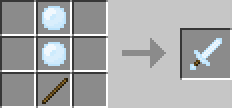
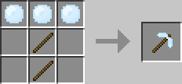
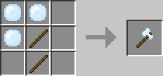
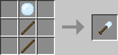
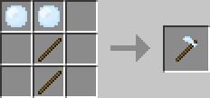

Skylandに移動する際に必要となるアイテムです。
鶏を何匹か倒すと手に入れることができます。Skylandで鶏を倒すと、手に入りやすい傾向にあります。
スカイライトを素材に作成できる各種ツールです。
ダイヤツールで破壊できるブロックは破壊できます。また、ダイヤツールの倍ほどの耐久値を持ちます。
スカイライトを素材に作成できる剣です。

スカイライトを素材に作成できるツルハシです。

スカイライトを素材に作成できる斧です。

スカイライトを素材に作成できるシャベルです。

スカイライトを素材に作成できるクワです。

他にも以下のブロックが追加されます。